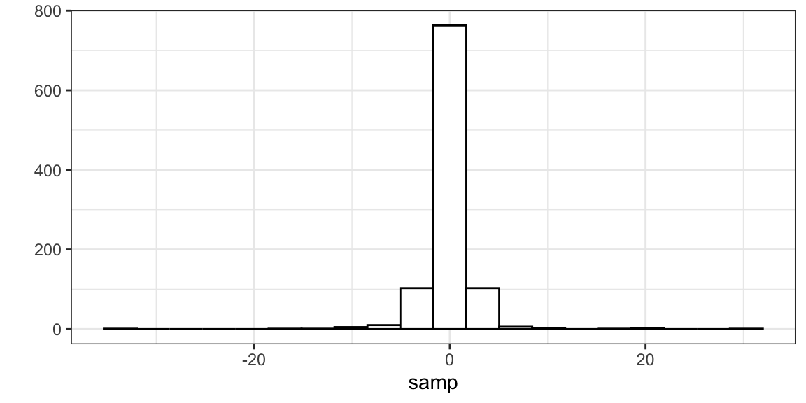
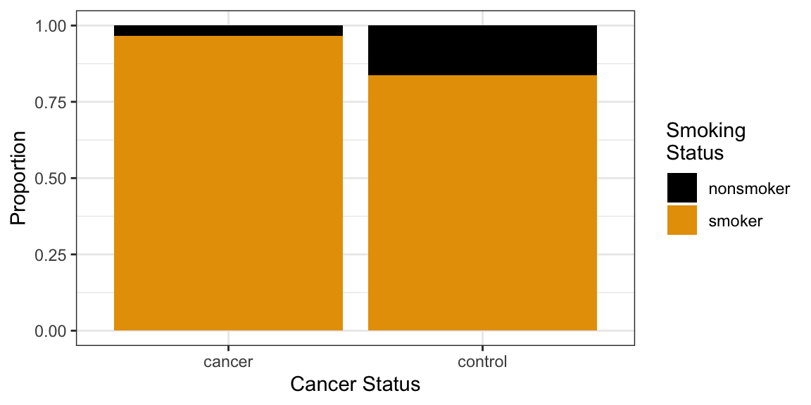

Basic Statistics
Learning Objectives
- Review intermediate Statistics (STAT 302/320/614).
- Probability distributions in R.
- P-values/confidence intervals.
- \(t\)-tests for means in R.
- Proportion tests in R.
A Note on this Review
This review assumes that you have had some basic statistics course and have seen all of these concepts in the past.
If you haven’t taken a basic statistics course, you will find this review very difficult and incomplete.
If you are having difficulty remembering these topics, then you can review them in the free OpenIntro book: https://leanpub.com/openintro-statistics. The most pertinent sections (from the third edition) are 3.1, 4.1, 4.2, 4.3, 5.1, 5.2, 5.3, 6.1, 6.2, and 6.5.
Probability and Distributions in R.
Distribution: The possible values of a variable and how often it takes those values.
A density describes the distribution of a quantitative variable. You can think of it as approximating a histogram. It is a curve where
- The area under the curve between any two points is approximately the probability of being between those two points.
- The total area under the curve is 1 (something must happen).
- The curve is never negative (can’t have negative probabilities).
The density of birthweights in America:

The distribution of many variables in Statistics approximate the normal distribution.
- If you know the mean and standard deviation of a normal distribution, then you know the whole distribution.
- Larger standard deviation implies more spread out (larger and smaller values are both more likely).
- Mean determines where the data are centered.
Normal densities with different means.
Normal densities with different standard deviations
Density Function (height of curve, NOT probability of a value).
dnorm(x = 2, mean = 1, sd = 1)[1] 0.242Warning: `qplot()` was deprecated in ggplot2 3.4.0.
Random Generation (generate samples from a given normal distribution).
samp <- rnorm(n = 1000, mean = 1, sd = 1) head(samp)[1] 0.3735 1.1836 0.1644 2.5953 1.3295 0.1795
Cumulative Distribution Function (probability of being less than or equal to some value).
pnorm(q = 2, mean = 1, sd = 1)[1] 0.8413Quantile function (find value that has a given the probability of being less than or equal to it).
qnorm(p = 0.8413, mean = 1, sd = 1)[1] 2
Exercise: Use
rnorm()to generate 10,000 random draws from a normal distribution with mean 5 and standard deviation 2. What proportion are less than 3? Can you think up a way to approximate this proportion using a different function?Exercise: In Hong Kong, human male height is approximately normally distributed with mean 171.5 cm and standard deviation 5.5 cm. What proportion of the Hong Kong population is between 170 cm and 180 cm?
The \(t\)-distribution shows up a lot in Statistics.
- It is also bell-curved but has “thicker tails” (more extreme observations are more likely).
- It is always centered at 0.
- It only has one parameter, called the “degrees of freedom”, which determines how thick the tails are.
- Smaller degrees of freedom mean thicker tails, larger degrees of freedom means thinner tails.
- If the degrees of freedom is large enough, the \(t\)-distribution is approximately the same as a normal distribution with mean 0 and variance 1.
\(t\)-distributions with different degrees of freedom:

Density Function
dt(x = -6, df = 2)[1] 0.004269
Random Generation
samp <- rt(n = 1000, df = 2) head(samp)[1] 0.89857 -1.07176 0.09639 0.79371 -0.42428 -0.64561
Cumulative Distribution Function
pt(q = 2, df = 2)[1] 0.9082
Quantile Function
qt(p = 0.9082, df = 2)[1] 1.999
There are many other distributions implemented in R. To see the most common, run:
help("Distributions")Exercise: Calculate the 0.75 quantile of the \(t\)-distribution for degrees of freedom \(1, 2, 3,\ldots,50\). Reproduce this plot:
Can you use a function to come up with the asymptotic value of the 0.75 quantile as the degrees of freedom approaches infinity?
All of Statistics
Observational/experimental Units: The people/places/things/animals/groups that we collect information about. Also known as “individuals” or “cases”. Sometimes I just say “units”.
Variable: A property of the observational/experimental units.
- E.g.: height of a person, area of a country, marital status.
Value: The specific level of a variable for an observational/experimental unit.
- E.g.: Bob is 5’11’’, China has an area of 3,705,407 square miles, Jane is divorced.
Quantitative Variable: The variable takes on numerical values where arithmetic operations (plus/minus/divide/times) make sense.
- E.g.: height, weight, area, income.
- Counterexample: Phone numbers, social security numbers.
Categorical Variable: The variable puts observational/experimental units into different groups/categories based on the values of that variable.
- E.g.: race/ethnicity, marital status, religion.
Binary Variable: A categorical variable that takes on only two values.
- E.g.: dead/alive, treatment/control.
Population: The collection of all observational units we are interested in.
Parameter: A numerical summary of the population.
- E.g.: Average height, proportion of people who are divorced, standard deviation of weight.
Sample: A subset of the population (some observational units, but not all of them).
Statistic: A numeric summary of the sample.
- E.g.: Average height of the sample, proportion of people who are divorced in the sample, standard deviation of weight of a sample.
Graphic:
Sampling Distribution: The distribution of a statistic over many hypothetical random samples from the population.

All of Statistics: We see a pattern in the sample.
- Estimation: Guess the pattern in the population based on the sample. Guess a parameter with a statistic. A statistic which is a guess for a parameter is called an estimate.
- Hypothesis Testing: Ask if the pattern we see in the sample also exists in the population. Test if a parameter is some value.
- Confidence Intervals: Quantify our (un)certainty of the pattern in the population based on the sample. Provide a range of likely parameter values.
We will go through a lot of examples of this below
For the examples below, we will use the data from the Sleuth3 package in R.
library(Sleuth3) library(tidyverse) library(broom)Exercise: Read the help page of the
ex0126data frame from the Sleuth3 package. What are the observational units? What are the variables? Which are quantitative and which are categorical?Exercise: Read the help page of the
ex0223data frame from the Sleuth3 package. What are the observational units? What are the variables? Which are quantitative and which are categorical?
Pattern: Mean is shifted (one quantitative variable)
Example: Researchers measured the volume of the left hippocampus in 15 twins where one twin had schizophrenia and the other did not. They were interested in whether the left hippocampus differed in size between the normal and schizophrenic twin.
Observational Units: The twins.
Population: All twins where one has schizophrenia and the other does not.
Sample: The 15 twins in our study.
Variable: The difference in volume in the left hippocampus between the twins. We derived this quantitative variable by subtracting one volume from another.
case0202 %>% as_tibble() %>% mutate(diff = Unaffected - Affected) %>% select(diff) -> schizo glimpse(schizo)Rows: 15 Columns: 1 $ diff <dbl> 0.67, -0.19, 0.09, 0.19, 0.13, 0.40, 0.04, 0.10, 0.50, 0.07, 0.23…Pattern: Use a histogram/boxplot to visualize the shift from 0.
ggplot(schizo, aes(x = diff)) + geom_histogram(bins = 15, fill = "white", color = "black") + geom_vline(xintercept = 0, lty = 2) + xlab("Difference in Brain Volumes")Graphic:
Parameter of interest: Mean difference in left hippocampus volumes for all twins.
Estimate: Use sample mean
schizo %>% summarize(meandiff = mean(diff))# A tibble: 1 × 1 meandiff <dbl> 1 0.1990.199 is our “best guess” for the parameter, but it is almost certainly not the value of the parameter (since we didn’t measure everyone).
Hypothesis Testing:
- We are interested in if the mean difference is different from 0.
- Two possibilities:
- Alternative Hypothesis: Mean is different from 0.
- Null Hypothesis: Mean is not different from 0, we just happened by chance to get twins that had a big difference in volume.
- Strategy: We calculate the probability of the data assuming possibility 2 (called a \(p\)-value). If this probability is low, we conclude possibility 1. If the this probability is high, we don’t conclude anything.
- p-value: the probability that you would see data as or more supportive of the alternative hypothesis than what you saw assuming that the null hypothesis is true.
Graphic:
The distribution of possible null sample means is given by statistical theory. Specifically, the \(t\)-statistic (mean divided by the standard deviation of the sampling distribution of the mean) has a \(t\) distribution with \(n - 1\) degrees of freedom (\(n\) is the sample size). It works as long as your data aren’t too skewed or if you have a large enough sample size.
Function:
t.test()tout <- t.test(schizo$diff) toutOne Sample t-test data: schizo$diff t = 3.2, df = 14, p-value = 0.006 alternative hypothesis: true mean is not equal to 0 95 percent confidence interval: 0.0667 0.3306 sample estimates: mean of x 0.1987The
tidy()function from the broom package will format the output of common procedures to a convenient data frame.tdf <- tidy(tout) tdf$estimatemean of x 0.1987tdf$p.value[1] 0.006062We often want a range of “likely” values. These are called confidence intervals.
t.test()will return these confidence intervals, giving lowest and highest likely values for the mean difference in volumes:tdf$conf.low[1] 0.0667tdf$conf.high[1] 0.3306Interpreting confidence intervals:
- CORRECT: We used a procedure that would capture the true parameter in 95% of repeated samples.
- CORRECT: Prior to sampling, the probability of capturing the true parameter is 0.95.
- WRONG: After sampling, the probability of capturing the true parameter is 0.95.
- Because after sampling the parameter is either in the interval or it’s not. We just don’t know which.
- WRONG: 95% of twins have volume differences within the bounds of the 95% confidence interval.
- Because confidence intervals are statements about parameters, not observational units or statistics.
Graphic:

Intuition: Statistical theory tells us that the sample mean will be within (approximately) 2 standard deviations of the population mean in 95% of repeated samples. This is two standard deviations of the sampling distribution of the sample mean, not two standard deviations of the sample. So we just add and subtract (approximately) two standard deviations of the sampling distribution from the sample mean.
Exercise: An investor sued his broker for lack of diversification. Below are the rates of return (in percent) for the investor’s portfolio over 39 months (data from Moore, McCabe, and Craig (2017)). The average of the S&P 500 stock index for the same period was 0.95%. Does the broker perform worse than average? Explore the data, set up hypotheses, and run the appropriate test.
stock <- tibble(return = c(-8.36, 1.63, -2.27, -2.93, -2.70, -2.93, -9.14, -2.64, 6.82, -2.35, -3.58, 6.13, 7.00, -15.25, -8.66, -1.03, -9.16, -1.25, -1.22, -10.27, -5.11, -0.80, -1.44, 1.28, -0.65, 4.34, 12.22, -7.21, -0.09, 7.34, 5.04, -7.24, -2.14, -1.01, -1.41, 12.03, -2.53, 4.33, 1.35))
Pattern: Means of two groups are different (one quantitative, one binary)
Example: Beaks depths were measured on Daphne Major finches in 1976 (before a harsh drought) and in 1978 (after a harsh drought). The researchers hypothesized that finches with deeper peaks were more likely to survive.
data("case0201") case0201 %>% mutate(Year = as.factor(Year)) -> finch glimpse(finch)Rows: 178 Columns: 2 $ Year <fct> 1976, 1976, 1976, 1976, 1976, 1976, 1976, 1976, 1976, 1976, 1976… $ Depth <dbl> 6.2, 6.8, 7.1, 7.1, 7.4, 7.8, 7.9, 8.0, 8.2, 8.4, 8.4, 8.4, 8.5,…Observational Units: The finches.
Population: All finches.
Sample: The 178 finches that the researches measured.
Variables: The year the finch was measured (binary/categorical) and the beak depth (quantitative). Possible to also treat year as quantitative.
Pattern: Use a boxplot to see if the groups differ.
ggplot(finch, aes(x = Year, y = Depth)) + geom_boxplot(coef = Inf) + geom_jitter(alpha = 1/3)Parameter of interest: Difference in mean beak depths between 1976 finches and 1978 finches.
Estimate: The difference in mean beak depths between 1976 finches and 1978 finches in our sample.
finch %>% group_by(Year) %>% summarize(meandepth = mean(Depth)) %>% spread(key = Year, value = meandepth) %>% mutate(diff = `1978` - `1976`) ## do you remember why we need back-ticks?# A tibble: 1 × 3 `1976` `1978` diff <dbl> <dbl> <dbl> 1 9.47 10.1 0.669Hypothesis Test:
- We want to know if the difference in the mean depths in the two years is actually different.
- Two possibilities:
- Alternative Hypothesis: The mean depths are different in the two years.
- Null Hypothesis: The mean depths are the same in the two years. We just happened by chance to get deep 1978 finches and shallow 1976 finches.
- Strategy: We calculate the probability of the data assuming possibility 2 (called a p-value). If this probability is low, we conclude possibility 1. If the this probability is high, we don’t conclude anything.
Graphic:
The distribution of possible null sample means comes from statistical theory. The t-statistic has a \(t\) distribution with a complicated degrees of freedom.
Function:
t.test(). The quantitative variable goes to the left of the tilde and the binary variable goes to the right of the tilde.tout <- t.test(Depth ~ Year, data = finch) tdf <- tidy(tout) tdf$estimate[1] -0.6685tdf$p.value[1] 8.739e-06t.test()also returns a 95% confidence interval for the difference in means. This has the exact same interpretation as in the previous section.c(tdf$conf.low, tdf$conf.high)[1] -0.9564 -0.3806Assumptions (in decreasing order of importance):
- Independence: conditional on year, beak length of one finch doesn’t give us any information on the beak lengths of any other finch.
- Approximate normality: The distribution of beak lengths is bell-curved in each year. Doesn’t matter for moderate-large sample sizes because of the central limit theorem.
Exercise: The Armed Forces Qualifying Test is designed for evaluating suitability of military recruits. There are different subjects tested: arithmetic, word knowledge, paragraph comprehension, and mathematics. They also provide a composite score. These data are stored in the
ex0222data frame from the Sleuth3 package. For which subjects do we have evidence that the genders differ? Make appropriate exploratory plots, set up the appropriate hypotheses, and run appropriate hypothesis tests.
Note on Assumptions of \(t\)-tools
Assumptions of \(t\)-tools in decreasing order of importance:
- Independence: Knowing value of one observation does not tell you value of another.
- Normality: Distribution of quantitative variable (within each group) is normal.
Hire a statistician if the independence assumption is violated.
If data are very skewed (violating assumption 2) and the sample size is small and the quantitative variable is always positive, then take a log to make the data more symmetric.
Example: Seeded clouds with either silver iodide or a control substance. Measured rainfall.
data("case0301") ggplot(case0301, aes(x = Treatment, y = Rainfall)) + geom_boxplot()ggplot(case0301, aes(x = Treatment, y = Rainfall)) + geom_boxplot() + scale_y_log10()case0301 %>% mutate(logRainfall = log(Rainfall)) %>% t.test(logRainfall ~ Treatment, data = .) %>% tidy() -> toutInference is then stated in terms of medians and ratios of medians since the log of the median is the median of the log (which is not true of means). Equivalently, the exponentiation of the median is equal to the median of the exponentiation. Also, when data are symmetric, median = mean.
- \(\mu_1\) = mean of log-rainfall in seeded group = median of log-rainfall in seeded group.
- \(\mu_2\) = mean of log-rainfall in unseeded group = median of log-rainfall in unseeded group.
- \(\mu_1 - \mu_2\) = difference in median log-rainfalls in two groups.
- \(e^{\mu_1 - \mu_2} = e^{\mu_1}/e^{\mu_2}\) = median rainfall in seeded group divided by median rainfall in unseeded group.
- We estimate and get confidence intervals for \(\mu_1 - \mu_2\), which implies we can estimate and get confidence intervals of \(e^{\mu_1}/e^{\mu_2}\) by just exponentiating the output of
t.test().
\(p\)-value:
tout$p.value[1] 0.01408Estimate ratio of median rainfall in seeded group to median rainfall in unseeded group:
exp(tout$estimate)[1] 3.139Confidence interval for ratio of median rainfall in seeded group to median rainfall in unseeded group:
exp(c(low = tout$conf.low, high = tout$conf.high))low high 1.272 7.742Exercise: Read up on the
ex0330dataset from the Sleuth3 R package. Determine if education level is associated with income. Interpret any estimates and confidence intervals you derive.
Pattern: Proportion is shifted (one binary variable).
Example: A 2013 Gallup poll (https://news.gallup.com/poll/161198/favor-russian-nuclear-arms-reductions.aspx) surveyed 1,028 U.S. adults. Of the respondents, 576 said they they support nuclear arms reduction
Observational Units: U.S. adults
Population: All U.S. adults.
Sample: The 1028 U.S. adults in the survey.
Variable: Did they support nuclear arms reduction (yes or no). This is a binary variable.
Pattern: Calculate sample proportion.
576 / 1028[1] 0.5603Parameter of interest: Proportion of U.S. adults who support nuclear arms reduction.
Estimate with sample proportion, 0.56.
Hypothesis Testing:
- We are interested in if more than half of U.S. adults support nuclear arms reduction.
- Two possibilities:
- Alternative Hypothesis: Proportion of U.S. adults who support nuclear arms reduction is different from 0.5.
- Null Hypothesis: Proportion of U.S. adults who support nuclear arms reduction is 0.5. We just happened by chance to get a sample proportion far from 0.5
- Strategy: We calculate the probability of the data assuming possibility 2 (called a p-value). If this probability is low, we conclude possibility 1. If this probability is high, we don not conclude anything.
Graphic:
The distribution of possible null sample proportions comes from statistical theory. The number of successes has a binomial distribution with success probability 0.5 and size parameter equal to the sample size. The sample proportion is the number successes divided by the sample size.
Function:
prop.test()(when you have a large number of both successes and failures) orbinom.test()(for any number of successes and failures).bout <- tidy(binom.test(x = 576, n = 1028, p = 0.5)) bout %>% select(estimate, p.value, conf.low, conf.high)# A tibble: 1 × 4 estimate p.value conf.low conf.high <dbl> <dbl> <dbl> <dbl> 1 0.560 0.000123 0.529 0.591pout <- tidy(prop.test(x = 576, n = 1028, p = 0.5)) pout %>% select(estimate, p.value, conf.low, conf.high)# A tibble: 1 × 4 estimate p.value conf.low conf.high <dbl> <dbl> <dbl> <dbl> 1 0.560 0.000125 0.529 0.591Exercise (from OpenIntro): The 2010 General Social Survey asked 1,259 US residents: “Do you think the use of marijuana should be made legal, or not?” 48% of the respondents said it should be made legal.
- Is 48% a sample statistic or a population parameter? Explain.
- Construct a 95% confidence interval for the proportion of US residents who think marijuana should be made legal, and interpret it in the context of the data.
Pattern: Two categorical variables are associated.
Example: 86 lung cancer patients and 86 controls were interviewed on their smoking history in a 1954 study. The data can be found at: https://data-science-master.github.io/lectures/data/smoke.csv.
smoke <- read_csv(file = "../data/smoke.csv") glimpse(smoke)Rows: 172 Columns: 3 $ individual <dbl> 1, 2, 3, 4, 5, 6, 7, 8, 9, 10, 11, 12, 13, 14, 15, 16, 17, … $ smoke <chr> "smoker", "smoker", "smoker", "smoker", "smoker", "smoker",… $ cancer <chr> "cancer", "cancer", "control", "cancer", "cancer", "cancer"…Usually, for two categorical variables, data are presented/provided in two-way tables:
tabdat <- table(smoke$smoke, smoke$cancer) tabdatcancer control nonsmoker 3 14 smoker 83 72addmargins(tabdat)cancer control Sum nonsmoker 3 14 17 smoker 83 72 155 Sum 86 86 172Or two-way tables of proportions.
prop.table(tabdat)cancer control nonsmoker 0.01744 0.08140 smoker 0.48256 0.41860Observational Units: People.
Population: All people.
Sample: The 172 people in the study.
Variables: The smoking status of the person (
smoke) and the cancer status of the person (cancer).Pattern: Visualize by calculating conditional proportions. For example, the following code calculates the proportion of cancer cases that are smokers, and the proportion of controls that are smokers.
prop.table(tabdat, margin = 2)cancer control nonsmoker 0.03488 0.16279 smoker 0.96512 0.83721If you need a fancy plot for your boss, try a mosaic plot:
as.data.frame(tabdat) %>% ggplot(aes(y = Freq, x = Var2, fill = Var1)) + geom_col(position = "fill") + scale_fill_colorblind(name = "Smoking\nStatus") + xlab("Cancer Status") + ylab("Proportion")
Intuition: If the two variables are not related, then we would expect about the same proportion of smokers in each group. But if these conditional proportions are very different, then to variables might be related.
Null hypothesis: cancer status and smoking status are independent.
Alternative hypothesis: cancer status and smoking status are dependent.
Function:
fisher.test()tests for whether we see more smokers in one group versus the other. Or, symmetrically, whether we see more cancer cases in the smoker group versus the nonsmoker group. We won’t get into the test statistic or the null distribution of this test.tidy(fisher.test(tabdat)) %>% select(p.value, estimate)# A tibble: 1 × 2 p.value estimate <dbl> <dbl> 1 0.00882 0.188The value in the “estimate” column is the odds ratio. It’s the multiplicative change in the odds of being a nonsmoker when you consider the cancer versus control groups. Specifically \[ \frac{3/86}{83/86} \div \frac{14/86}{72/86} \]
You might see a chi-squared test in the wild. They are only appropriate for large numbers of counts in each cell. I don’t see a reason to use it since we have computers, but it’s fine most of the time to use:
tidy(chisq.test(tabdat)) %>% select(p.value)# A tibble: 1 × 1 p.value <dbl> 1 0.0106Exercise: Researches collected information on women 60 years old or older. They asked them about their sexual activity and their coffee drinking status. Data are from: Diokno, Ananias C., Morton B. Brown, and A. Regula Herzog. “Sexual function in the elderly.” Archives of Internal Medicine 150, no. 1 (1990): 197-200. The table is below:
tabdat <- as.table(matrix(c(15, 115, 25, 70), nrow = 2)) dimnames(tabdat) <- list(coffee = c("yes", "no"), sex = c("yes", "no")) tabdatsex coffee yes no yes 15 25 no 115 70Does there appear to be an association between coffee drinking and sexual activity? Create a table to explore this association. Then run a hypothesis test. What is the null hypothesis?
References
Moore, David S, George P McCabe, and Bruce A Craig. 2017. “Introduction to the Practice of Statistics, Ninth Edition.” W.H. Freeman & Company.